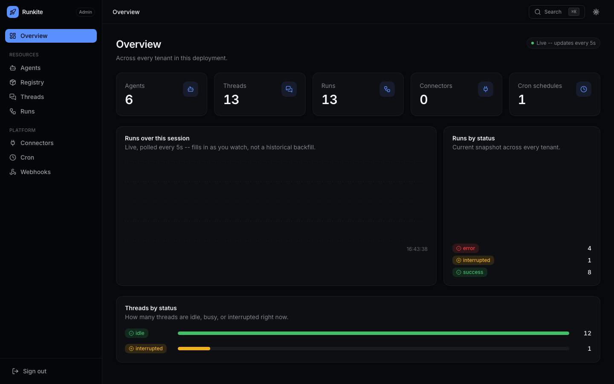

Connect
A2A coordination
One agent delegates to another mid-run — via the plane, not ad-hoc HTTP between runner pods.
What it is
Native sub-agent delegation: call_agent / callAgent from inside a run.
Same create-run semantics clients use, reached over an internal A2A route with depth and parent bookkeeping.
Why it is here
Multi-agent systems need shared credentials, HITL, and audit on child work too — not a side channel that bypasses the plane.
How to implement
- Register coordinator and worker agents on runners attached to the same plane.
- From a graph node, call the SDK helper with the run’s
config. - Child run is enqueued like any other job; wait or async per API.
- Observe both runs in Admin → Runs / Threads.
# Python
from runkite_runner.a2a import call_agent
async def coordinator_node(state, config):
result = await call_agent(config, "worker_agent", {"messages": [...]}, wait=True)
...
# TypeScript
import { callAgent } from "runkite-runner";
const result = await callAgent(config, "worker_agent", { messages: [...] }, { wait: true });
In the product
Admin overview — plane activity while agents coordinate

What to expect
- Depth limits — unbounded recursion is rejected by plane bookkeeping.
- Same governance — child runs still hit connectors/HITL/grants.
- Not a new public protocol — it’s Agent Protocol used as a sub-call.
Reference: docs/a2a.md · Scenario · Protocols